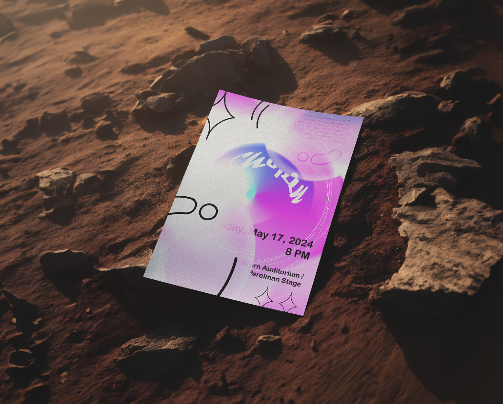
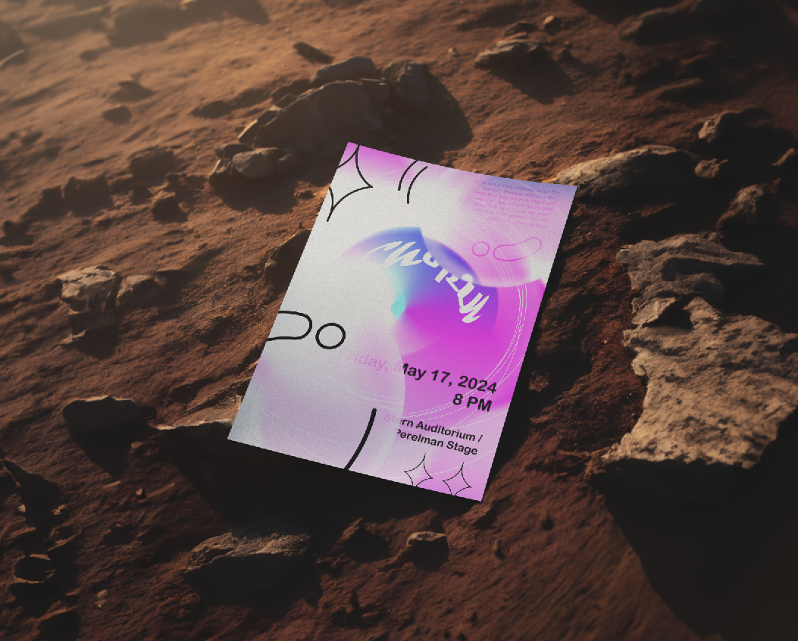
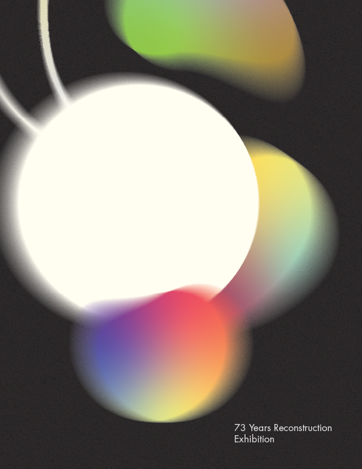
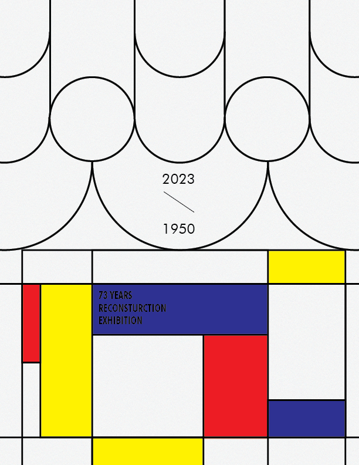

This is a collection of posters I designed. I focused on simplicity and conveying meaning. I primarily spend most of my time collecting information because finding hidden meanings makes messages more effectively convey to consumers.
Poster
Poster Design
Personal Artwork
09.2023 - 10. 2023
"Problem-solving."
I aspire to solve problems through design.
Chopin
Contrary to traditional classical music posters that often appear heavy and rigid, I aimed to express Chopin's gentle melodies with a soft touch.
 

Korean Traditional House - Snail
I created this traditional Korean house, known as 'Hanok,' with the hope of connecting the past and the future. It was inspired by the snail, a creature that, if broken, can regenerate its own shell to protect itself. Snails are slow but patient, and I found these qualities resembling a Hanok. Additionally, the snail's hearing ability is a memory device for human voices. I used these similarities to express my design.

Korean Traditional House2 - Hanok is holding Mondrian
I connected the intricate geometric aesthetics of 'Hanok' with the grid, depicting Hanok holding an abstract Mondrian-like painting. It represents a connection between the past and the future.
